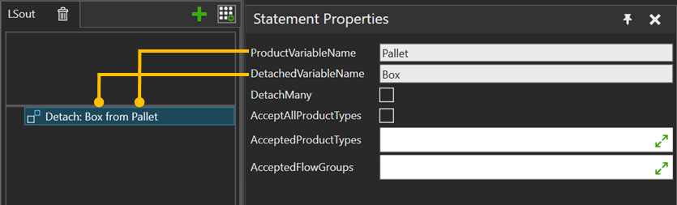

A Detach statement allows you to detach one or more product instances from a common parent product instance.

| Name | Description |
| ProductVariableName | Input variable from which to get the parent product instance. |
| DetachedVariableName | Output variable where to store references to the detached products. |
DetachMany |
When True, detaches all products that match the filter, otherwise only the first one. |
| AcceptAllProductTypes | If selected, any product is accepted. |
| AcceptedFlowGroups | Allows only the selected flow groups. |
AcceptedProductTypes |
Allows only the selected product types. |